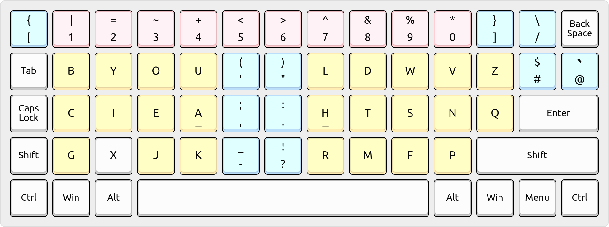
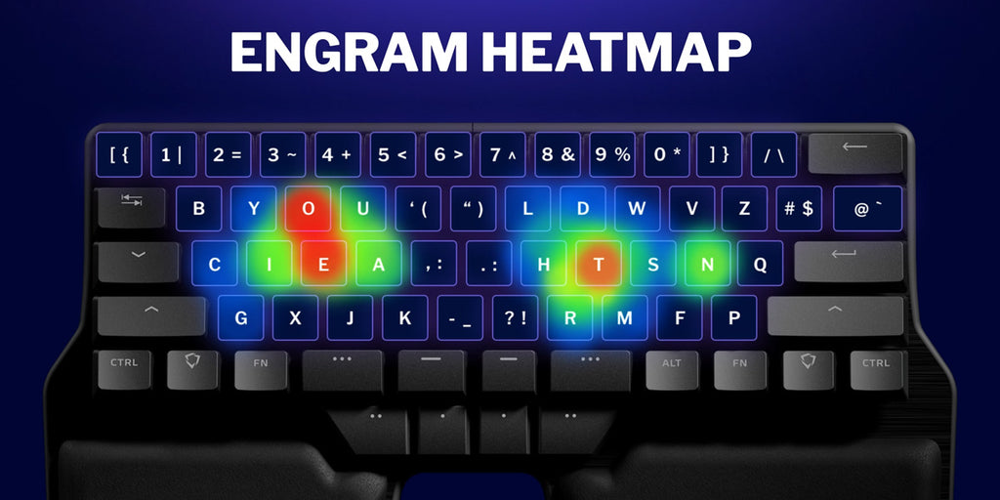

It happened again: for the third time in my life, I switched to a better
keyboard layout, embarking on a months-long journey of reprogramming my brain,
rewiring decades worth of accumulated muscle memory through deliberate practice.
Arno’s Engram layout v2.0 is an optimized key layout for touch typing in
English based on ergonomic considerations, with a protocol and software
for creating new, optimized key layouts in other languages.
[{ 1| 2= 3~ 4+ 5< 6> 7^ 8& 9% 0* ]} /\
bB yY oO uU '( ") lL dD wW vV zZ #$ @`
cC iI eE aA ,; .: hH tT sS nN qQ
gG xX jJ kK -_ ?! rR mM fF pP

Review
Engram’s novel placement of punctuation in the middle columns of the keyboard
eliminates lateral movement of the index fingers while simultaneously providing
quick access to frequently used punctuation marks (i.e. comma and period feel
heavenly). I haven’t seen any other layouts do this before; especially spilling
over the remaining letters to the right hand pinky cluster — it’s pure genius!
The layout is very comfortable and it also lends itself well to programming.
Notably, I’m a die-hard Vim user and it passes my test for ergonomic Vim usage:
J and K are adjacent (identical to Dvorak, actually) — ideal üíØ
H and L are adjacent (albeit on the same finger) — good üëç
W is on right-hand strong ring finger — good üëç
B is on left-hand weak pinky finger — ouch ü§ï (but the left-hand strong
ring finger can easily hop over to take the load off the pinky — okay üëç)
Update: I wrote that remark about the B key back when I was using the
flat/2D ErgoDox EZ keyboard, and it’s no longer a concern for me beyond the
learning stage – especially on my current curved/3D keyboard. ü•£
Punctuation is in the middle so either hand can type it — ideal üíØ
Shifted symbols on number keys are intuitive or mnemonic — great üëç
In addition, Engram also arranges Vim’s operator+motion sequences as rolls (mostly
inward rolls) and alternations, plus some keys have Vim-esque affinity:
ea (inroll) go to end of word and append
bi (inroll) go to start of word and insert
ciw (inroll) change inside word
caw (inroll) change around word
yiw (inroll) yank inside word
yaw (inroll) yank around word
dw (roll) delete to end of word
diw (alt+roll) delete inside word
daw (alt+roll) delete around word
t (jump upto char) comes before f (jump onto char) in left-to-right order
n and p are clustered for next/previous menu navigation and completion
y (yank) and p (paste) are on opposite hands to since they’re so different
b (beginning of word) and w (end of word) are split apart and left-to-right
It has been a week since I switched to Engram and here is my experience so far:
Curiously, the BEAKL-15 layout that I switched over from has the same
left-hand vowel cluster as Engram, and this commonality significantly reduced
my transition time. In contrast, it took me a month to become comfortable with
that vowel cluster when I previously switched from Dvorak to BEAKL-15 six
months ago.
After another week of real-world use (but this time without as much
dedicated typing practice), I’m happy to say that I’m now comfortably
typing at ~60 WPM as the new Engram muscle memory is finally taking
precedence in my brain (thank goodness for neuroplasticity!). ü§ì
I made a few tweaks to the ortholinear version of Engram on my Ergodox
EZ keymap
for programming convenience and general comfort:
I relocated the @ # / keys to the unused left-hand pinky keys (the
slash is especially handy for URLs, file paths, and Vim searching)
I put redundant square & angle brackets on either single-hand
(otherwise the ortholinear split disconnects them, very far apart)
I use a dedicated symbol layer
that further minimizes reaching by clustering frequent sigils &
delimiters along the home row/block.
In addition, I would like to emphasize that Engram feels very
comfortable to type in. With BEAKL-15, I often felt like I’m “climbing
a wall” when typing (for example, the word “spring” has me reaching up
and down a lot). Whereas with Engram, I feel like I’m “spreading my
wings” and gracefully taking flight. It’s a significant qualitative
improvement. üòå
In particular, I’ve noticed that my inter-key typing speed is the fastest I’ve
ever observed in my 23 years of typing! üèÉüí® Portions of words (especially
those in rolls) form rapidly on my screen as I type, though entire words take
relatively longer due to momentary pauses as my muscle memory context switches
between different finger/hand placements. This is no doubt the result of those
interkey speed and finger strength matrices applied from Arno Klein’s extensive
research. üëå
Overall, I feel that I’m now at 95% confidence while typing: subconsciously
finding the right keys to press and positioning my fingers in anticipation of
the next characters coming down the pipeline. Productivity wise, I feel 50%
more efficient.
Surprisingly, this newfound speed & efficiency was achieved while maintaining
typing comfort, not at its expense. For example, the word “highlight” is
delightful to type in Engram whereas I had to mentally prepare myself and
concentrate to type it quickly in BEAKL-15.
However, I do notice minor slowdowns on upward-traveling same-finger bigrams
such as “je” in the word “object”, but this is more influenced by the style of
keyboard being used than Engram itself. For instance, I notice this more on my
Ergodox, which has larger & distantly placed keys than those on my laptop. In
general, Engram scores well with low 1.24% Same Finger Bigrams (SFBs). üëå
In conclusion, Engram feels very comfortable due to its generous allotment of
inward rolls (that “you” and “th” feel amazing), heavier emphasis on home row
and bottom rows, balanced distribution between vertical climbs & horizontal
spreads. üíØ
Two years later
I’ve reached a comfortable speed of 100+ WPM with Engram 2.0 after properly
configuring my programmable keyboard with custom firmware that disambiguates
home row mods and lets me type more naturally, without artificial slowdowns. ü•≤
Learning a new layout is primarily a matter of time and effort: it just takes
practice, hang in there! üòéüëç And continue training with layout agnostic tutors
like KeyBr.com and N-gram Type.
It may be helpful to write down the layout on a piece of paper: each row has only
4 letters anyway (except for the outliers Z and Q), so it chunks very well into
human memory’s working capacity of about 5-7 items at a time (according to
something I read in general science news).
Writing (and presenting or teaching – per Feynman) brings together different
memory subsystems and solidifies knowledge in a holistic way. If you’re a visual
thinker like I am, this may help you immensely. Ô∏èüå§Ô∏è Draw the
layout, make interconnections between related letters, and you’ll be set.
For example, @jlangstrom on Discord came up with a novel mnemonic system
ü߆‚ú® where he would associate opposing pairs of letters per finger
with words in English as well as his native language, Swedish:
“I remember the two characters by thinking that they are short hands. CN (china) KR (Korea) IS (Ice in swedish) ET (E.T phone home) and so on.”
KeyBr
I’ve used the KeyBr typing tutor to learn two different keyboard layouts in recent years. üëåü§ì It introduces a few new keys at a time (in English letter frequency order, so it’s layout agnostic üòé) until you gain proficiency, before advancing you further. Moreover, it gives you random English-like word fragments as you level up, so there’s a good variety for training compared to the typical fjfj style of rote exercises. I highly recommend it for learning a new layout.
You can hide the on-screen keyboard in KeyBr by pressing the Zoom button (next to the Settings button, with the gear icon). Then open another window below or beside it containing a reference image for the layout you’re learning. This way, you’re effectively visually replacing keybr’s on-screen keyboard with your own, and thus there’s no confusion. ü™Ñ
Adaptation
Learning a new layout takes time (several days at least, because your brain internalizes the new concepts while you sleep — that’s what I’ve observed1 anyway) and this may be especially true coming from QWERTY and Colemak because they distribute vowels across both hands whereas Engram, Dvorak, and BEAKL cluster all vowels on the left hand, so it may take a little more effort to get used to it initially. üßó But the advantage of such clustering is that it improves hand balance & alternation, and is generally useful for international languages2.
Pinky finger usage
I’ve heard concerns about Engram’s placement of B on the left pinky finger – since most people are coming from QWERTY and their left pinky is relatively underutilized (and thus weaker) due to the fact that Q is one of the least frequent letters in English. In fact, I too observed this firsthand when I transitioned from Dvorak (which places the relatively infrequent apostrophe / single quote there) but my left pinky got stronger with practice and it hasn’t been an issue for me past the learning stage. Nevertheless, if this still remains a concern for you, consider these alternate placements for Q/Z and B/V.
In addition, I’ve found that the left pinky column in Engram (BCG) isn’t a problem in practice on contoured columnar keyboards (such as the Glove80, Dactyl, etc.) compared to traditional row-staggered keyboards (which the Alt-Layouts discord appears to be more concerned with optimizing). See this Reddit comment for further elaboration.
Cardinal directions (HJKL)
I presume you are accustomed to Vim’s traditional HJKL order? üôÇ I map the 4 right-hand fingers on the Cursor layer’s home row as Left, Up, Down, Right to according to the inward-rising curvature of the Glove80 keyboard. This is a longstanding preference that I formed 17 years ago, in my early days of using the Kinesis Advantage with the Dvorak layout, whose lack of HJKL provided the freedom to reimagine the arrangement of arrow keys on the home row.
In particular, I find it more natural to follow the inward-rising curve of the keyboard’s curved 3D keywell, which elevates the thumb above the pinky finger and, similarly, the middle finger (up arrow) above the ring finger (down arrow). As a bonus, this arrangement avoids double-duty on the index finger (for H & J) such that each home row finger is responsible for exactly one cardinal direction. Curiously, there is one thing in common (identical, actually) between HJKL and my arrow arrangement: K/up is on the middle finger.
In addition, my arrangement is consistent with the left-to-right (LTR) directionality of the Home, Page Up/Down, End keys on the lower row just beneath. Similarly, the clustering of Up with Left and Down with Right also reflects LTR because that’s how, say, a document shrinks & grows respectively in a text editor or word processor. See also this Reddit comment for additional context.
Variations
Here’s the baseline layout with which to compare the variations discussed below:
Depending on your ergonomic concerns, you might find these variations more
comfortable, or at least preferable, on ergonomic keyboards such as the
Glove80.
Engrammer
This variation helps maintain cross-proficiency with conventional keyboards:
Shifted pairs are standard (e.g. quotes don’t shift to parentheses).
Semicolon is placed relative to comma and period just like standard.
Equals and square brackets are placed near their standard locations.
In addition, application shortcuts that assume standard shifted pairs (such as
Control-Equals for the “zoom in” operation in Web browsers) now work correctly.
Z and Q
The Z and Q keys overload the right pinky finger asymmetrically in the Engram
layout due to the physical constraints of traditional row-staggered keyboards.
This is an acceptable compromise because Z and Q are the least frequent letters
in English: although they overload the right pinky finger, it seldom types them.
I was fond of variant ZQb, discovered by @x10an14, because it eliminates lateral movement of the right pinky finger, making the
layout truly columnar. üíØ I tried switching to this personally but found that I
use the CapsWord key more often than Z or Q, so the standard Engram layout was actually better for me. üòØ
Similarly, some people dislike reaching up for the B and V keys with their pinky
fingers or even, in some cases, reaching down for the G and P keys too!
Developed in 2021, Engram is a project completely created from scratch, focusing mainly on the best way to type diagrams, trigrams, or… Ngrams. The punctuation in the middle creates a clear gap between the hands, which makes it one of the best layouts for split columnar keyboards.

@Omnishambles asked on the Discord server for MoErgo Glove80 on April 20, 2023:
The Engram heatmap really makes the stacking of E and O on the same finger stand out. I know it’s one of the least-used vowel bigrams, but it’s still a vowel bigram. Does that combination ever feel awkward to you?
Not at all. üëç I feel quite comfortable with the EO bigram in the Engram layout because it’s on the column assigned to the middle finger (the longest one), where ascending from E to O feels more like uncurling or lengthening (as opposed to reaching) the middle finger from its home row position. ü§î Take a look at the rationale (and alternatives) that Engram considered for vowel clustering & placement.
As for the layout heatmaps in that Dygma article, they seem to have been created inconsistently: the Dvorak heatmap shows activity on the left shift key whereas the others don’t. Similarly, the Colemak, Dvorak, and Halmak heatmaps don’t highlight the O key (certainly not in red) as much as the others. Thus, it’s unclear what input text they typed on each layout when generating those heatmaps: each one seems to have had a different input.
A better source for heatmap comparison might be Ian Douglas’ database, which shows heatmaps for English, programming, bigrams, and so on. For example, here is the English heatmap for the Engram layout:
QWERTY
Jonathan Wheeler asked in the comments section of this article on July 8, 2023:
After reprogramming your brain to use different key layouts several times, when using someone else’s device, or a smartphone without a keyboard, etc, do you have any difficulty spontaneously switching back to the ol’ QWERTY when needed?
Not at all — in practice, I’ve found that it’s not a zero-sum game:
To my surprise, I still retain my QWERTY muscle memory, even nearly 2 decades after switching away from it! For instance, it’s especially strong when swiping (aka “glide typing”) on smartphones: I somehow Just Know the placement of all the letters perfectly, without conscious thought. Perhaps the physical interface of a smartphone’s virtual keyboard (behind a smooth glass display) is different enough from my ergonomic keyboards (split, columnar, with contoured keywells) that my brain doesn’t get confused.
However, actual touch-typing in QWERTY on conventional row-staggered keyboards is a bit rusty, but still workable. For instance, I was at my local public library recently where I had to fill out some forms on a computer kiosk: I was able to approximately touch-type (not as bad as hunt & peck, but not as good as blind touch-typing) on QWERTY even though I left it behind so long ago.
In contrast, I have no trouble typing in the Engram layout (and previously in BEAKL-15 and Dvorak) on conventional row-staggered keyboards (such as my laptop’s built-in keyboard) because the knowledge of where keys are located (along with the physical movements necessary to reach and press them) is ingrained in my muscle memory: it’s like a “device driver”. Whereas the actual key-to-letter mapping seems to be stored independently (stacked atop muscle memory, as a higher layer) because it can be overridden and reused on different physical keyboards: it’s like an “input method”.
In this manner, I’ve found that when you learn to type in a new layout or to use a different style of keyboard, it’s more like adding a new capability than replacing existing skills. Such that the very act of typing is effectively a transformation of your brain’s high-level thoughts and words into low-level physical keypresses by the appropriate combination of “input method” and “device driver” for the particular keyboard and layout you’re currently using. With sufficient practice, it all Just Works without conscious effort and on a variety of different physical keyboards (and layouts too, if you so wish). üôå
Neuroplasticity for the win! (You’ll be fine üëç — I’d highly recommend it.)
I’m curious what made you move away from BEAKL-15? Was there anything in particular that you did not like or struggle with.
With BEAKL-15, I ultimately felt that I didn’t experience the comfort that was advertised: I often felt like “climbing up a wall” when typing (for example, the word “spring” has me reaching up and down vertically). Also, I ended up forking my own variation after 3 months because the punctuation assignments weren’t as convenient as I liked for programming. Eventually, I found the obscure BEAKL-19bis layout which scored well on a comparison page and I was interested in learning more about its origins (how did the authors invent it? what principles guided them?) but I was too late: like an archaeologist pondering ancient civilizations, so too, I was left with more questions than I could investigate and was left demoralized. Even the BEAKL authors (Den and Ian) disappeared, along with the Shenafu forums where they discussed their creations, just a few months before I even heard about BEAKL. üòû
Thankfully, I found that Ian Douglas (now known as @iandoug on GitHub) was still active elsewhere and actually ran the keyboard-design.com website which I encountered while investigating BEAKL-19bis. On that site, he mentioned Arno Klein’s research publication and the resulting Engram layout. This caught my attention! Here was a layout, methodically & systematically derived from exhaustive comparison of permutations, guided by ergonomics principles. Not some golden result hidden behind AI algorithms like Halmak, or optimizers like AnDW for BEAKL-15, or CarpalX and MTGAP etc. Here was something that anyone could run on their own system and follow along in the Python notebook. (Plus the fact that Engram ended up on the same left-hand vowel layout as AnDW for BEAKL-15 greatly increased my confidence in the Engram methodology!)
Also did you use the BEAKL-15 number row and symbol suggestion?
No, I didn’t use the BEAKL-15 number row because it’s asymmetric: 40123 76598 (I naturally expected 87659 on right hand for symmetry). Moreover, as a programmer, I type numbers even less than prose, so rearranging the already intuitive native number row didn’t seem like a worthy trade-off in my case.
As for the BEAKL-15 symbol layer, I adapted parts of its design into my own symbol layer which is more optimized for Vim. (NOTE: My symbol layer has since evolved into this in the present day.) For example, I have ^()$ on the left hand home row of my Symbol layer which lets me quickly travel to BOL PrevSentence NextSentence EOL respectively. You can see how the BEAKL-15 symbol layer isn’t so convenient for Vim, although I do appreciate how logically it’s laid out.
Dvorak
I’ve typed exclusively in Dvorak for 16 years üëã and Engram since the past 2 years. ü§ì
I find Engram more comfortable because it eliminates lateral index finger movement when typing prose: Engram places all punctuation in the central columns, so my 8 touch typing fingers go straight up and down, effectively staying in their columns all the time. Moreover, Engram adds inward rolls (like MTGAP and Colemak) and accounts for finger strength differences, in addition to Dvorak’s concept of hand alternation. This combines the best of both worlds (rolling and alternation) for a rapid, yet comfortable, typing experience.
Finally, Engram has some important similarities with Dvorak: E and T/H and J/K placement is the same in both layouts. As a die-hard Vim user (since the last 14 years), I find that Engram has an even better L placement (directly above H; both on the strong index finger) than Dvorak while retaining its convenient J/K placement. See my review above for details.
Colemak
@formlessdao asked in Arno’s Engram discussion board on GitHub on June 8, 2021:
What are the improvements of Engram over Colemak Mod-DH and Halmak?
I would say the main advantage is that Engram was designed from a clean slate with support for columnar split/ortholinear keyboards in mind. üí° Moreover, it doesn’t limit itself to the historical legacy and physical constraints of typewriter style row-staggered keyboards.
For example, Engram takes full advantage of the former style of columnar keyboards (where each finger can travel straight up and down along its own dedicated column) by eliminating lateral movement of the index fingers into the central columns for typing letters (A-Z).
In contrast, Colemak assumes the latter style of row-staggered keyboards because it retains the ZXCV sequence from QWERTY legacy for application & clipboard shortcuts (which become far less important when you have a fully programmable keyboard that lets you place such shortcuts on dedicated keys, layers, combos, macros, etc. anywhere you like) and also because Colemak’s variations (AngleMod, DH-mod, etc.) balance & redistribute finger workloads in a way that might not provide much benefit on columnar keyboards. For instance, consider the AngleMod: how would you use that “angle” on keyboards with curved 3D keywells (e.g. Glove80, Dactyl, Kinesis, Maltron) anyway? üòµ‚Äçüí´
As an overall comparison of Colemak and Engram statistics, what do you think of page 113 in the Alt Keyboard Layouts community’s document on all things AKL? On that page, I see that Engram brings a modest reduction in SFS%, a significant reduction in LSB% (since it doesn’t have any letters in the central columns), better balance of left/right hand workload, significantly less redirects, and more left/right hand alternation (like Dvorak) along with more than double the amount of inward rolls — all at the cost of a negligible increase in SFB% compared to Colemak and Colemak-DH (seen on the following page) alike. (And also, not mentioned on that page: the Vim friendliness it coincidentally brings with JK and HL adjacency as well as B on left hand, W on right hand, T to the left of F, comma to the left of semicolon, and ease of cw, dw, yw, etc.).
There are many more keyboard layouts in the ecosystem, neatly quantized by SFB% in that document’s table of contents, available to be explored. But my feeling is that, if Colemak is considered to be a good enough campsite for travelers (welcomed by familiarity of conventional row staggered keyboards: ZXCV preservation, angle mods, and alt-fingering options to choose from) to settle down at, couldn’t Engram also be considered in the same light for split columnar keyboards (forgo ZXCV in favor of semantic undo/redo/cut/copy/paste keys such as those in Miryoku’s navigation layer, and forgo angle mods along with alt-fingering because columnar keyboards practically enforce proper touch-typing)?
Halmak
Similarly, Halmak’s AI was trained on a MacBook laptop’s row-staggered keyboard, so it literally assumes that exact physical key placement as well as its trainer’s natural home row finger placement (see “fingers are not perfect” at timestamp 5:11). Thus, it might not provide as much benefit for columnar split/ortho keyboards or for those who have a different natural home row placement than the AI’s trainer. ü§î
I’ve found that time away from practice (especially sleep) actually gives the brain a chance to reinforce and optimize all those new neurological pathways you’re building in the form of muscle memory. You might be a little rusty for the first few minutes but soon it’ll all come rushing back. üåä That’s what I observed recently after a week-long break away from computers. ↩
Specifically, I would consider layouts such as Engram and Dvorak that cluster all the vowels on one hand because words in Indo-European languages are composed of consonant+vowel formations, so you’ll get a more balanced workload distribution across both hands this way. Moreover, these improvements would benefit all of the languages you type in — whereas right now, they’re all encumbered by QWERTY legacy. :disappointed_relieved: ↩